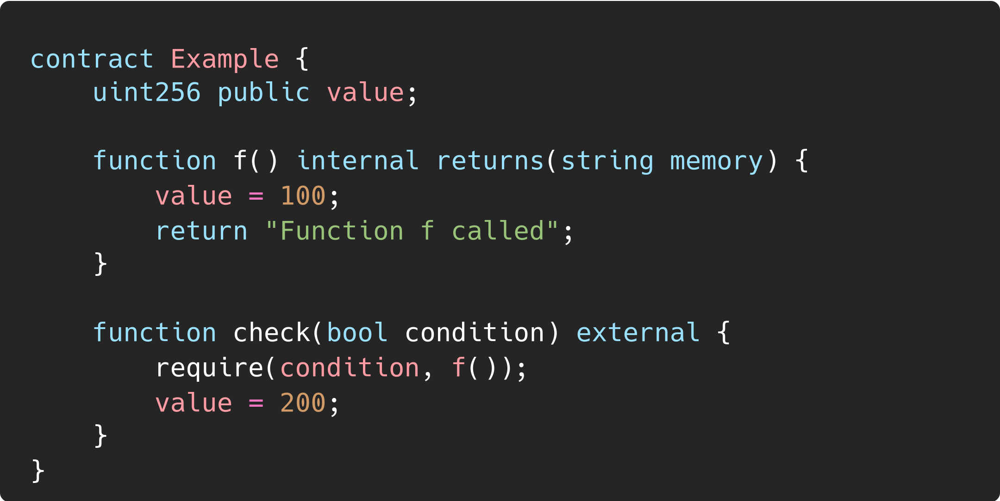
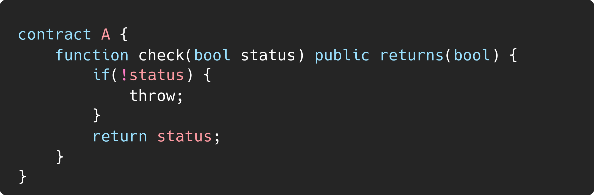
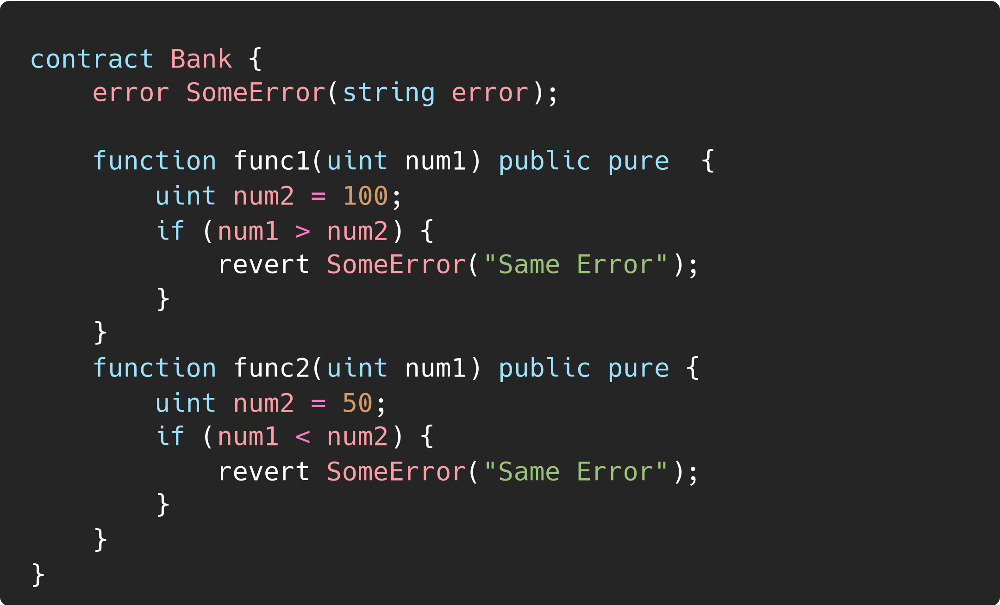

Error Semantics in Solidity |
|
| Organization | DeepStack Software Pvt. Ltd. |
|---|---|
| Org URL | https://www.deepstacksoft.com |
Posted on: 2024-09-18
The arguments passed to the require function in Solidity are evaluated unconditionally, regardless of whether the condition is true or false.
This means that any expressions, including function calls, are executed even if the condition ultimately fails, and the require check causes the transaction to revert.

value will be update to 100 before revert back to 0, you can see the Function f called getting returned in the console.
Solidity previously had a keyword called throw, which was used to revert the execution of a transaction and roll back all changes. When throw was used, it would:
However, throw was deprecated in version 0.4.13 and eventually removed in version 0.5.0. It was replaced by the more explicit and flexible revert() function.

It is possible for a contract to revert with different errors of the same name or even with errors defined in different places that are indistinguishable by the caller. For the outside, i.e. the ABI, only the name of the error is relevant, not the contract or file where it is defined.

Here both func1 and func2 reverts with same error which might create confusion when interacting with the contract externally